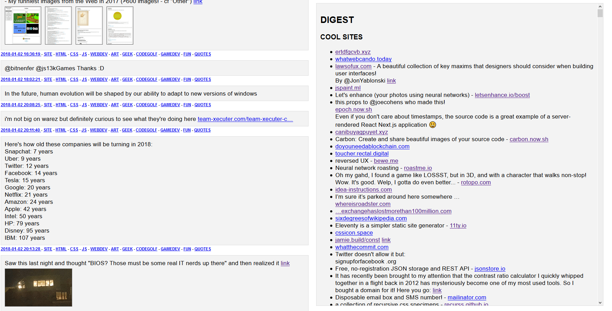

An interface allowing to display all my tweets and keep the most important ones for my tech watch page.
Replace tweet.js with your own Twitter data to browse your own tweets!

Github: here
Demo: here